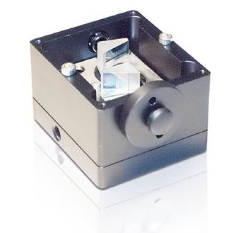
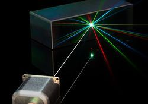
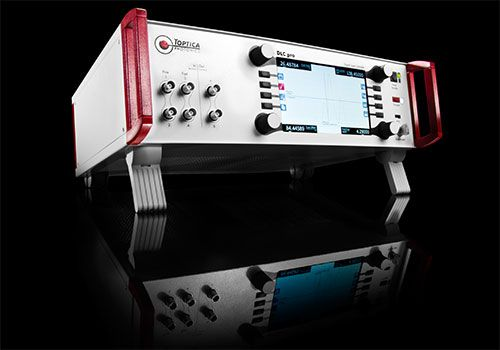
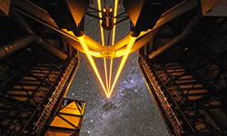
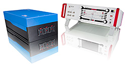
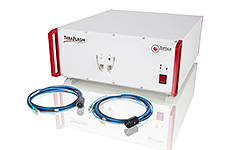
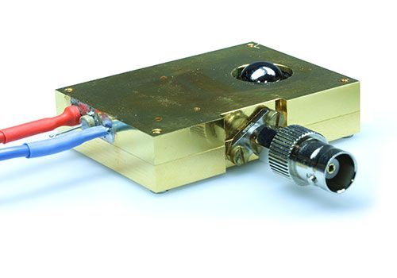
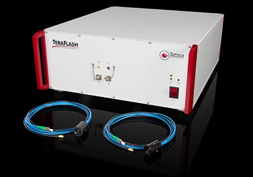
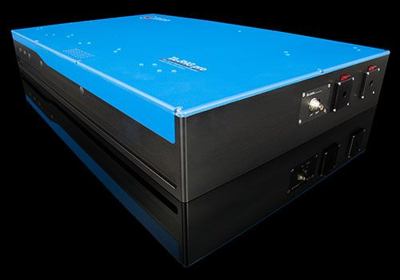
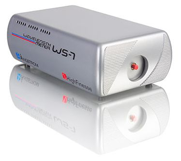

Company profile:
TOPTICA Photonics AG

All wavelengths.
TOPTICA Photonics AG
Lochhamer Schlag 19
82166 Gräfelfing
Germany
| Tel.: | +49 89 85 83 70 |
| Fax: | +49 89 85 83 72 00 |
| E-mail: | |
| Website: | www.toptica.com |
| Social media: | Facebook, LinkedIn, YouTube |
| Quality certification: | ISO 9001:2015 |
Company Description
TOPTICA Photonics AG develops, manufactures and distributes technology-leading diode and fiber lasers, terahertz systems and frequency combs for scientific and industrial markets. TOPTICA offers the widest range of single-mode tunable light in the 190 nm to 3500 nm and 0.1 THz – 5 THz spectral region along with various accessories to measure, characterize and stabilize light.
TOPTICA Photonics has the following distributors:
- Lastek: Australia / New Zealand
- Universal (Hong Kong) Technology Co. Ltd.: China
- Opton Laser International: France
- Simco Global Technology & Systems Ltd.: India
- Lahat Technologies Ltd.: Israel
- EuroLase Ltd.: Russia
- Precision Technologies Pte Ltd.: Singapore / Malaysia
- Jinsung Instruments, Inc.: South Korea
- Delta Optics: Spain
- Luxton: Taiwan
News
2019-02-09
TOPTICA receives Prism Award 2019 at Photonics West
TOPTICA's OPO laser system won the Prism Awards 2019 for scientific lasers at Photonics West.
The Prism Awards, often described as the "Oscars of the Photonics Industry", presented ten categories with more than 100 participating companies. TOPTICA’s DLC TOPO, a mid-IR light source for molecular spectroscopy, was announced as a finalist in December 2018 and won in the scientific laser category!
Presenting the award, Prof. Dr. Ursula Keller, Head of Research of ETH Zürich and a pioneer in the field of ultrafast lasers, humorously challenged the perception that scientific lasers are “not good enough for industry” but rather emphasized that the definition should be "exactly the right number of buttons so that the scientist has fun". The TOPO has four knobs and eight switches – just the right amount.
“We are proud to receive this award tonight for our contributions and innovation,” says Mark A. Tolbert, President of TOPTICA Photonics, Inc. “To win this award means more than just being recognized, it means a group of leading industry experts support and believe we have created a valuable product. Contributing to the success of our customers is our goal as a company.”
Products
| Product | Description |
|---|---|
| amplifiers (optical …) |  For a variety of applications the output power of single-mode laser diodes is not sufficient. Here TOPTICA offers tapered amplifiers in Master Oscillator Power Amplifier (MOPA) configuration as well as stand-alone amplifier systems. Tapered amplifiers feature high powers up to 3.5 W with excellent beam quality and without compromising the favorable spectral qualities of their master lasers. MOPA systems feature TOPTICA's low noise and narrow linewidth master lasers and offer convenient and safe operation with DLC pro. |
| anamorphic prism pairs |  Diode lasers usually feature an elliptical beam profile. Often, however, a circular beam shape is required, e.g. for mode-matching to an external resonator, adapting beam size to pass a small aperture of an isolator, or to obtain a supreme fiber coupling efficiency. The Anamorphic Prism Pairs J is an adjustable anamorphic prism pair which circularizes an elliptical beam, by either expanding or compressing one of the beam axes. |
| beam collimators |  The FiberOut fiber collimator transforms the divergent beam emitted at the end of an optical fiber into a collimated one. It can be equipped with a variety of lenses, matching different fiber mode-field diameters and output beam sizes. The rugged, inexpensive collimator can be used for both FC/PC and FC/APC-type connectors. It can be easily mounted on post or into optical mounts (25 mm diameter). |
| beam splitters | OPTICA Photonics AG offers a wide range of optical fibers ideally suited for use with TOPTICAs lasers and FiberDock. These economically priced fibers cover a wide range of wavelengths. TOPTICA recommends to always purchase a fiber along with a laser and fiber coupler, as this ensures maximum fiber coupling efficiency. Also specialty fibers for power monitoring, beam splitting or combining are available with various ratios and also polarization maintaining. |
| blue lasers |  TOPTICA supplies a wide range of high-quality lasers in the blue wavelength region. These include single-mode diode lasers (up to 300 mW), stabilized single-frequency diode lasers, tunable diode lasers as well as frequency-converted laser systems (up to 1 W). |
| coherence (equipment for … measurements) | There is not a single universal technique to measure laser linewidths or coherence lengths. Different setups are employed for different linewidth regimes. See our application note on coherence issues. See also our application note on 12 Orders of Coherence Control! |
| diode lasers |  Diode lasers combine plug-and-play operation, compact form factor and maximum performance. TOPTICA offers single-mode diode lasers, multi-color lasers, single-frequency lasers, and tunable diode lasers for demanding applications in biophotonics, industrial metrology and quantum technology. TOPTICA provides the widest wavelength coverage of diode lasers on the market (190 – 3500 nm). |
| distance measurements with lasers (equipment for …) | Laser rangefinders can be used to monitor or measure distances or object lengths. They can also provide positional locations over long distances, e.g. several kilometers, without physically touching the observed object. The laser range finders are regularly used in geodesy, sports, hunting or military. Usually, the distances are measured with accuracies of up to a millimeter, whereas the measured object can even be in motion. In addition, measurements on natural surfaces with low reflectivity are also possible. |
| distributed feedback lasers |  TOPTICA’s DLC DFB pro lasers integrate both distributed-feedback (DFB) and distributed Bragg reflector (DBR) lasers. Available wavelengths include 633 nm and the entire range from 760 nm to 3500 nm. Three laser heads accommodate different diode packages. Due to the absence of alignment-sensitive components, the DLC DFB pro lasers exhibit an exceptional stability and reliability. |
| external-cavity diode lasers |  OPTICA offers ECDLs with unique tuning capabilities. The CTL lasers tune up to 110 nm without any mode hop. Finding resonances of quantum dots or micro resonators as well as spectroscopy has never been easier. TOPTICA continues to provide the DL pro, which is now available at even more wavelengths and is well suited for laser cooling and many other AMO experiments. |
| Faraday isolators |  TOPTICA’s optical isolators provide market-leading performance spanning the UV out to the NIR. Use the same isolators that make TOPTICA lasers the best in the world! |
| femtosecond lasers |  With more than 15 years of experience, TOPTICA provides high-repetitive femtosecond lasers based on erbium- and ytterbium fiber laser technology. TOPTICA offers systems for OEM integrators as well as customized solutions for scientific customers, ranging from compact fiber-based seeders / oscillators to custom-tailored high-power amplifiers. |
| fiber lasers |  The key for successful integration of ultrafast technology are robust, cost-effective systems with simple push-button operation. TOPTICA offers several products fulfilling these requirements: ultrafast fiber lasers based on erbium (Er) and ytterbium (Yb) like the FemtoFiber smart, FemtoFiber pro, FemtoFiber ultra and FemtoFiber dichro series. All these systems are based on TOPTICA FemtoFiber technology. TOPTICA’s FemtoFiber lasers provide reliable femtosecond / picoseconds pulses based on polarization-maintaining fibers and SAM mode-locking. Different models (1560/780 nm, VIS/NIR tunable output, IR/NIR supercontinuum, short-pulse) cover a wide range of applications, e.g. nonlinear microscopy, two-photon polymerization, time-domain THz and attoscience. |
| frequency combs (equipment for generating …) |  OPTICA’s Difference Frequency Comb (DFC) is a compact, robust, high-end solution featuring turn-key operation in a 19 inch format. The patented CERO technology uses difference frequency generation for an all-optical phase-lock of νCEO. Thanks to its intrinsic stability, the DFC is the number one choice for anyone looking for high-end performance combined with a high level of robustness. See also our video on 48 hours in the life of a DFC! |
| frequency doubling (nonlinear crystals and related equipment for …) |  TOPTICA provides frequency-doubled continuous-wave diode and fiber lasers. The wavelength range covers 330 nm – 780 nm with up to 20 nm of tuning. In addition, stand-alone resonant frequency-doubling units are available. |
| frequency metrology (equipment for …) |  TOPTICA’s frequency metrology product line uses TOPTICA proprietary CERO-technology which is based on difference frequency generation (DFG). It is inherently fCEO-stable and is characterized by a high robustness combined with high-end performance. |
| frequency quadrupling (nonlinear crystals and related equipment for …) | TOPTICA provides frequency-quadrupled continuous-wave diode and fiber lasers based on two cascaded frequency-doubling stages. Available wavelengths range from 190 nm to 390 nm with up to 10 nm of tuning. Furthermore, the novel Super-UV technology guarantees long-term stable operation and higher powers at DUV wavelengths. |
| green lasers |  Nonlinear frequency conversion techniques access wavelengths that cannot be generated directly from laser diode technology. Via second or fourth harmonic generation, TOPTICA laser systems can access the UV, blue, green, yellow and orange spectral ranges at high powers. TOPTICA offers tunable, single-frequency systems at virtually any wavelength between 190 nm and 780 nm, employing ultrastable seed lasers, power amplification in semiconductor or fiber amplifiers, and a proprietary bow-tie cavity design – all in established pro technology. |
| holography (equipment for …) |  OPTICA provides fixed-frequency and tunable cw laser sources ideally suitable for holography. Available in the wavelength ranges from UV to visible (RGB) on to the IR, these sources offer coherence lengths greater than 100 m and powers up to several watts. |
| laser applications | TOPTICA offers lasers for applications in fields like biophotonics, industrial manufacturing, fundamental and applied quantum technology, optical microscopy, terahertz sensing, ultrafast studies, semiconductor process control, metrology, astronomy, and geology. |
| laser diode drivers |  Apart from a well-engineered optomechanical design and the integrated laser diode, the most important part of a tunable diode laser system is its driving electronics, which is responsible for getting the most out of a laser system. Wide mode-hop-free tuning with Littrow setups requires a well-defined interplay between piezo actuator and current driver. Drifts of the laser diode current, the temperature or the piezo voltage determine the drift of the laser frequency and the stability against mode-hopping. Noise on any of these outputs increases the laser linewidth. The digital DLC pro represents the latest stage of development of laser control electronics. Its noise and drift properties are even better than the well established and widely used preceeding electronics SYS DC 110. |
| laser diode modules |  TOPTICA offers various tunable diode laser modules. The combined spectral coverage is from 190 nm to 3500 nm, powers up to 4 W (TA), mode-hop-free tuning up to 110 nm (CTL). |
| laser diodes | TOPTICA offers a large variety of wavelength-selected single-mode laser diodes. Among more standard laser diodes you will also find "rarities", i.e. diodes with output wavelengths that only TOPTICA provides. The diodes can be purchased separately. In addition TOPTICA can integrate any diode from the stock lists into a tunable diode laser system: Fabry–Perot or AR-coated laser diodes may be integrated into a diode laser systems, DFB/DBR laser diodes into a DFB pro and Tapered Amplifier into an TA system. Each type of diode is carefully tested in an external cavity laser configuration with respect to coarse tuning range, mode-hop-free tuning range and power limits. The results are disclosed on request to the customer in a detailed datasheet. In case you can still not match your wavelength of choice, contact TOPTICA – and chances are very high that we can provide it within very short time. |
| laser guide stars (equipment for …) |  TOPTICA Projects offers high-power cw Guide Star lasers, delivering more than 20 W of optical output power, tunable around 589 nm (sodium resonance). These systems are currently in use at all major optical telescopes and provide an outstanding performance. |
| laser lithography | Photolithography is a microfabrication technique that is commonly used to pattern parts of a thin film or the bulk of a substrate. It is also often termed as optical lithography or UV lithography, if ultraviolett wavelengths are used. The techninque uses light to transfer a geometric pattern from a photomask onto a light-sensitive chemical ("photoresist" or "resist") on the substrate. This first irradiation step is followed by a series of chemical treatments that either engrave the exposed pattern into the material underneath the photoresist, or it enables deposition of a new material in the desired pattern on top of it. The optical lens system of photolithography setups is usually very complex and is inspected during the manufacturing process with coherent cw laser light of the same wavelength as the excimer lasers, i.e. 193 or 248 nm. Since excimer lasers have insufficient coherence, other lasers are used for this inspection, e.g. frequency-stabilized and frequency-converted diode lasers. |
| laser microscopy (laser microscopes) | Optical microscopes are used to study objects that are too small to be seen with the naked eye. This can be organic cells, semiconductor surfaces, or even single molecules. There are two different approaches in optical microscopy, either detecting near-field (SNOM) or far-field signals emitted by the investigated materials. There are various methods for optical microscopy that utilize different light sources. For some microscopy techniques a simple white light source is sufficient, whereas more sophisticated methods require lasers as light source. Those can be single-mode diode lasers or multi-laser engines that deliver a continuous laser beam at one or several colors, some techniques rely on short laser pulses with femtosecond duration that can be provided by TOPTICA's ultrafast fiber lasers. |
| laser spectroscopy (equipment for …) |  TOPTICA offers industrial and research grade lasers for spectroscopy with an ultra-broad wavelength coverage: 190 nm – 0.1 THz. TOPTICA lasers deliver narrow-linewidth emission that is tunable – in some systems up to 110 nm wide without a single mode hop. High-end, turn-key difference frequency combs and terahertz systems complement the portfolio for the most demanding spectroscopy applications. |
| LIDAR (… equipment) |  TOPTICA’s added value for LIDAR systems is in providing best cw seeding lasers and external references. With their extremely narrow linewidth, high frequency stability and unmatched wavelength availability, TOPTICA's scientific lasers are ideal seeders for the high power pulsed lasers employed for LIDAR. Fiber coupling with the ultrastable FiberDock allows for straight forward implementation of our lasers. We also offer the most accurate and most stable wavelength meters, Fabry–Perot interferometers (FPI 100) and spectroscopy cells or spectroscopy modules as well as electronic locking modules which are needed to stabilize a cw diode laser to an external reference. |
| linewidth (narrow-linewidth lasers or equipment for linewidth measurements) |  All of TOPTICA’s tunable diode lasers offer a narrow linewidth of typically 100 kHz, corresponding to coherence lengths of almost 1 km. By stabilizing these lasers even further with TOPTICA’s locking electronics, linewidths below 1 Hz are possible. |
| mid-infrared laser sources |  The spectral region between optics and electronics lying in the mid-infrared is difficult to access. Nevertheless it is of great spectroscopic interest because it hosts the majority of molecular finger prints: important vibrational modes with energies in the spectral range of 670 cm-1 to 3400 cm-1 can be accessed by exciting the sample at wavelengths of 3 μm to 15 μm. TOPTICA’s ultrafast fiber laser FemtoFiber dichro midIR generates powerful radiation tunable between 3 μm – 15 μm that is ideally suited for spectroscopy and (nearfield) microscopy applications. Based on difference frequency generation (DFG) of two optically synchronized laser pulses at tunable wavelengths of 1 – 2 μm a highly stable broadband emission of approximately 400 cm-1 is generated. Here, the powerful fundamental output at 1560 nm of an erbium-doped ultrafast fiber laser is superimposed with the long or short wavelength part of a supercontinuum. |
| mode-locked fiber lasers | TOPTICA's FemtoFiber lasers provide reliable femto-/picosecond pulses based on polarization-maintaining fibers and SAM mode-locking. Different models (1560/780 nm, VIS/NIR tunable output, IR/NIR supercontinuum, short-pulse) cover a wide range of applications, e.g. time-domain terahertz, microscopy, attoscience and as seed lasers. |
| mode-locked lasers | TOPTICA's FemtoFiber lasers provide reliable femto-/picosecond pulses based on polarization-maintaining fibers and SAM mode-locking. Different models (1560/780 nm, VIS/NIR tunable output, IR/NIR supercontinuum, short-pulse) cover a wide range of applications, e.g. time-domain terahertz, microscopy, attoscience and as seed lasers. |
| narrow-linewidth lasers | All of TOPTICA’s tunable diode lasers offer a narrow linewidth of typically 100 kHz, corresponding to coherence lengths of almost 1 km. By stabilizing these lasers even further with TOPTICA’s locking electronics, linewidths below 1 Hz are possible. |
| nonlinear frequency conversion (equipment for …) |  TOPTICA provides tunable continuous-wave laser systems including nonlinear frequency conversion for accessing the wavelength range from 190 nm to 4000 nm. The conversion processes are second-harmonic generation and optical parametric generation. |
| ophthalmology (equipment for …) |  Originally developed for ophthalmology, Optical Coherence Tomography (OCT) now spreads over to a variety of applications. The benefit of this technique is the imaging capability of sample structures even at a few millimeters depth with micrometer resolution. For example, invisible defects lying underneath the surface of manufactured parts or different layers in biological tissue and in medieval paintings can be visualized. OCT relies on low coherence interferometry utilizing spectrally broad light sources like superluminescent diodes or femtosecond lasers. TOPTICA has developed a new optical sampling method: Electronically Controlled Optical Sampling (ECOPS), which speeds up TD-OCT measurements by several orders of magnitude avoiding movable parts in the set-up, using two synchronized femtosecond fiber lasers. The imaging depth remains large and the scan can be hold on any position or zoomed in on interesting features in the OCT image. |
| optical clocks | TOPTICA offers laser sources for various applications and optical metrology, including time and frequency measurements. The high precision measurements that are mentioned here require tunable lasers, most of the time with very narrow linewidth and long term stability. In addition, special electronics modules are needed to perform reliable and most advanced laser stabilization. Photonicals – additional laser related accessories – help to characterize or to manipulate the laser light. Many, if not most experiments mentioned here already successfully use our products. TOPTICA Photonics is proud of its company slogan “A passion for precision” which since many years describes very well our internal motivation. |
| optical coherence tomography | Originally developed for ophthalmology, Optical Coherence Tomography (OCT) now spreads over to a variety of applications. The benefit of this technique is the imaging capability of sample structures even at a few millimeters depth with micrometer resolution. For example, invisible defects lying underneath the surface of manufactured parts or different layers in biological tissue and in medieval paintings can be visualized. OCT relies on low coherence interferometry utilizing spectrally broad light sources like superluminescent diodes or femtosecond lasers. TOPTICA has developed a new optical sampling method: Electronically Controlled Optical Sampling (ECOPS), which speeds up TD-OCT measurements by several orders of magnitude avoiding movable parts in the set-up, using two synchronized femtosecond fiber lasers. The imaging depth remains large and the scan can be hold on any position or zoomed in on interesting features in the OCT image. |
| optical metrology (… equipment) | TOPTICA offers laser sources for various applications and optical metrology, including time and frequency measurements, tests of fundamental constants and tests of fundamental theories, a term interferometry, laser-based trace gas analysis, and the measurement of smallest magnetic fields. The high precision measurements that are mentioned here require tunable lasers, most of the time with very narrow linewidth and long term stability. In addition, special electronics modules are needed to perform reliable and most advanced laser stabilization. Photonicals – additional laser related accessories – help to characterize or to manipulate the laser light. Many, if not most experiments mentioned here already successfully use our products. TOPTICA Photonics is proud of its company slogan “A passion for precision” which since many years describes very well our internal motivation. |
| optical parametric chirped-pulse amplification (OPCPA light sources) | TOPTICA’s FemtoFiber dichro midIR generates radiation at 3 μm – 15 μm. Based on difference frequency generation of two optically synchronized laser pulses at tunable wavelengths of 1 – 2 μm a highly stable broadband emission of approximately 400 cm-1 is generated. Here, the output at 1560 nm of an erbium-doped ultrafast fiber laser is superimposed with the long or short wavelength part of a supercontinuum. The CEO-free mid-IR laser pulses are applied to attosecond spectroscopy where the extreme UV pulses consist of only a few optical cycles. The conversion of mid-IR radiation to extreme UV is accomplished by high harmonic generation. First, the mid-IR pulses are subject to optical parametric chirped amplification (OPCPA). Then, the intense laser fields are launched into an atomic beam or a gas-filled hollow core fibre to generate extreme UV attosecond laser pulses via high harmonics. |
| optical parametric oscillators |  OPTICA provides a continuous-wave optical parametric oscillator system: The DLC TOPO emits broadly tunable, Watt-class output power between 1.45 μm and 4.0 μm. Fully motorized and driven by the digital laser driver DLC pro, it provides unprecedented ease of use. |
| picosecond lasers | TOPTICA is renowned for providing most stable picosecond and sub-picosecond oscillators/seeders for high-power material processing systems. Owing to our industry-proven robust and compact design, we have set new standards for laser-based material processing systems. |
| pulsed lasers | TOPTICA's FemtoFiber lasers provide reliable femto-/picosecond pulses based on polarization-maintaining fibers and SAM mode-locking. Different models (1560/780 nm, VIS/NIR tunable output, IR/NIR supercontinuum, short-pulse) cover a wide range of applications, e.g. time-domain terahertz, microscopy, attoscience and as seed lasers. |
| pump-probe measurements (equipment for pump-probe measurements) |  TOPTICA contributes to the field of pump–probe measurements with newest fiber technology which is outstanding in performance and versatility. A single laser system can be equipped with various outputs that are intrinsically optically synchronized down to the attosecond level. All of these can be configured individually to satisfy the experimental needs: Pulse durations as short as 15 fs or broad tuning ranges of 490 nm to 700 nm, 850 nm to 1000 nm or 980 nm to 2200 nm are available. Within the third generation of TOPTICA’s ultrafast fiber lasers a novel, versatile toolbox is available to realize even more advanced pump–probe spectroscopy schemes. The FemtoFiber dichro bioMP outputs two different wavelength simultaneously (1050/780 nm at 150 fs), while the system can control the relative time delay of both colors and the GDD as well. |
| quantum cryptography (… equipment) |  When transferring scientific achievements into real life applications one needs an accompanying partner with expertise in fundamental research and industrial/oem capabilities. TOPTICA uniquely unifies both of these usually contradictory competences. Coming out of the scientific quantum technology environment, TOPTICA has mastered the transition to a reliable and highly appreciated oem supplier. We still share the language, application know-how and passion with scientists but also understand and fulfill the specific requirements of industry. TOPTICA is capable of converting scientific/research grade products into industry-grade instruments. And we are used to ramp-up production to high volumes. We can modify existing products or undertake new product developments and even higher level system integrations. So better choose the right partner right from the beginning! |
| Raman spectroscopy (equipment for …) | For Raman spectroscopy, a wavelength of 532 nm is regularly used, as well as 785 nm (to reduce autofluorescence of the sample). For semiconductor inspection shorter wavelengths of 405 nm, 266 nm, or even 213 nm are commonly used. Most recent, upcoming time-resolved Raman spectroscopy and microscopy applications (i.e measurements on airplane engine exhausts to optimize the combustion process and reduce fuel consumption) trigger the need for pulsed laser sources operating in the femto- and picosecond regime. This demand is covered by the FemtoFiber laser family, which have already proven its outstanding performance and suitability in various broadband CARS and SRS applications. |
| red lasers | TOPTICA offers a large variety of wavelength-selected single-mode laser diodes. Among more standard laser diodes you will also find "rarities", i.e. diodes with output wavelengths that only TOPTICA provides. The diodes can be purchased separately. In addition TOPTICA can integrate any diode from the stock lists into a tunable diode laser system: Fabry–Perot or AR-coated laser diodes may be integrated into a diode laser systems, DFB/DBR laser diodes into a DFB pro and Tapered Amplifier into an TA system. Each type of diode is carefully tested in an external cavity laser configuration with respect to coarse tuning range, mode-hop-free tuning range and power limits. The results are disclosed on request to the customer in a detailed datasheet. In case you can still not match your wavelength of choice, contact TOPTICA – and chances are very high that we can provide it within very short time. |
| RGB sources |  TOPTICA's high-power single-frequency diode lasers are ideal coherent laser sources for a multitude of demanding applications, including lithography, optics test & inspection and holography. These lasers pave the way to manufacture high-quality optics for Augmented Reality (AR), Virtual Reality (VR) or Mixed Reality (MR). For example, ultra-precise optical gratings are easily produced with these laser systems to fabricate hologram projections or holographic safety features. The laser systems offer an unprecedented output power and frequency stability. They outperform commonly used gas lasers in terms of wall-plug efficiency, footprint, lifetime and costs of consumables. In addition, diode laser systems are not restricted to a discrete number of wavelengths, but are available at a broad variety of wavelengths and can even provide spectral tunability over several nanometers. These features of UV and RGB diode lasers open up a wide range of new techniques and simplify established methods in various applications. |
| semiconductor lasers | TOPTICA is renowned for providing the widest wavelength coverage of diode lasers on the market (190 – 3500 nm), providing high-power diode lasers with great ease of use even at exotic wavelengths. TOPTICA diode lasers enable a big variety of demanding applications in quantum optics, spectroscopy, biophotonics, microscopy, test & measurement, as well as materials inspection. |
| semiconductor optical amplifiers |  TOPTICA offers tapered semiconductor optical amplifier systems and amplified laser systems with the widest spectral coverage and highest power: between 660 nm and 1495 nm with single mode emission and powers up to 4 W. Tunable, single frequency, narrow linewidth and convenient to control and operate. |
| single-frequency lasers | All of TOPTICA’s tunable diode lasers offer a narrow linewidth of typically 100 kHz, corresponding to coherence lengths of almost 1 km. By stabilizing these lasers even further with TOPTICA’s locking electronics, linewidths below 1 Hz are possible. |
| spectroscopy (equipment for …) | TOPTICA offers industrial and research grade lasers for spectroscopy with an ultra-broad wavelength coverage: 190 nm – 0.1 THz. TOPTICA lasers deliver narrow-linewidth emission that is tunable – in some systems up to 110 nm wide without a single mode hop. High-end, turn-key difference frequency combs and terahertz systems complement the portfolio for the most demanding spectroscopy applications. |
| supercontinuum generation (supercontinuum sources and materials for …) | TOPTICA's FemtoFiber lasers provide reliable femto-/picosecond pulses based on polarization-maintaining fibers and SAM mode-locking. Different models (1560/780 nm, VIS/NIR tunable output, IR/NIR supercontinuum, short-pulse) cover a wide range of applications, e.g. time-domain terahertz, microscopy, attoscience and as seed lasers. |
| synchronization of lasers (equipment for the …) | TOPTICA offers solutions for synchronization of ultrafast fiber laser and continuous-wave (cw) lasers. Synchronized femtosecond fiber lasers are a key element for applications like time-resolved microscopy and pump-probe spectroscopy. Phase and frequency locking of TOPTICA’s broad portfolio of tunable cw diode laser is supported by a range of versatile laser locking electronics. |
| tapered amplifiers | TOPTICA offers optical amplifier systems and amplified laser systems with the widest spectral coverage and highest power: between 660 nm and 1495 nm with single mode emission and powers up to 4 W. Tunable, single frequency, narrow linewidth and convenient to control and operate. |
| tapered laser diodes | For a variety of applications the output power of single-mode laser diodes is not sufficient. Here TOPTICA offers tapered amplifiers in Master Oscillator Power Amplifier (MOPA) configuration as well as stand-alone amplifier systems. Tapered amplifiers feature high powers up to 3.5 W with excellent beam quality and without compromising the favorable spectral qualities of their master lasers. MOPA systems feature TOPTICA's low noise and narrow linewidth master lasers and offer convenient and safe operation with DLC pro. |
| terahertz radiation |  TOPTICA provides systems and components for time-domain and frequency-domain terahertz generation. For pulsed applications, the TeraFlash sets new standards in terms of dynamic range, bandwidth and measurement speed. For continuous-wave spectroscopy, the TeraScan systems combine ease of use with best-in-class frequency resolution. The TeraSpeed is an ultrafast terahertz screening platform. |
| THz detectors |  TOPTICA offers receivers for coherent and incoherent terahertz detection. Photoconductive antennas (i.e., coherent detectors) enable phase-sensitive measurements with a high dynamic range in both time-domain and frequency-domain applications. Schottky diodes (incoherent detectors) lend themselves to fast terahertz imaging tasks. |
| THz sources |  TOPTICA’s terahertz sources employ photoconductive antennas, which convert near-infrared laser radiation to terahertz light. TOPTICA offers modules both for time-domain and frequency-domain applications. All of TOPTICA’s photoconductive antennas come equipped with a silicon lens and SM/PM fiber pigtail, and can be integrated in the terahertz platforms TeraScan, TeraFlash and TeraSpeed. |
| tunable lasers | TOPTICA offers various tunable diode laser systems. The combined spectral coverage is from 190 nm to 3500 nm, powers up to 4 W (TA), mode-hop-free tuning up to 110 nm (CTL). |
| ultrafast lasers | With more than 15 years of experience, TOPTICA provides high-repetitive femtosecond and picosecond lasers based on erbium- and ytterbium fiber laser technology. TOPTICA offers systems for OEM integrators as well as customized solutions for scientific customers, ranging from compact fiber-based seeders / oscillators to custom-tailored high-power amplifiers. |
| ultraviolet lasers |  TOPTICA provides lasers in the UV range from 190 nm – 390 nm. Proprietary technology and high-end clean room manufacturing capabilities enable stable long-term operation at all wavelengths. |
| wavemeters |  The wavelength meters of the WS series accomplish wavelength measurements with highest accuracy. Both cw and pulsed lasers with narrow-band emission can be examined, monitored and even actively controlled. Various models of the WS series are available, covering UV to IR wavelength ranges (192 nm – 11 μm). Based on a rugged Fizeau interferometer setup without any moving components, the wavelength meters provide quasi unlimited lifetime. The spectrum analyzers LSA and HDSA allow for multi-line or broadband spectrum of light sources like cw and pulsed lasers, gas discharge lamps, superluminescence diodes, semiconductor laser diodes and LEDs. |
| yellow and orange lasers | TOPTICA offers a large variety of wavelength-selected single-mode laser diodes. Among more standard laser diodes you will also find "rarities", i.e. diodes with output wavelengths that only TOPTICA provides. The diodes can be purchased separately. In addition TOPTICA can integrate any diode from the stock lists into a tunable diode laser system: Fabry–Perot or AR-coated laser diodes may be integrated into a diode laser systems, DFB/DBR laser diodes into a DFB pro and Tapered Amplifier into an TA system. Each type of diode is carefully tested in an external cavity laser configuration with respect to coarse tuning range, mode-hop-free tuning range and power limits. The results are disclosed on request to the customer in a detailed datasheet. In case you can still not match your wavelength of choice, contact TOPTICA – and chances are very high that we can provide it within very short time. |
| distributed Bragg reflector lasers | |
| Fabry-Perot interferometers | |
| fiber cables | |
| fiber couplers | |
| fiber patch cables | |
| fiber-coupled diode lasers (… and related equipment) | |
| fibers (optical …) | |
| frequency tripling (nonlinear crystals and related equipment for …) | |
| injection seeding (injecting-seeded lasers or equipment for …) | |
| laser heads | |
| laser speckle (equipment for reducing …) | |
| lasers | |
| polarization-maintaining fibers | |
| reference cavities | |
| single-frequency operation (single-frequency lasers or equipment for achieving … of lasers) | |
| stabilization of lasers (equipment for laser stabilization) | |
| sum and difference frequency generation (equipment for …) |
Promotions

Information of TOPTICA Photonics Appears on the Following Pages
Company profile (this page)
Pages with Suppliers for Products
amplifiers, anamorphic prism pairs, beam collimators, beam splitters, blue lasers, coherence, diode lasers, distance measurements with lasers, distributed Bragg reflector lasers, distributed feedback lasers, external-cavity diode lasers, Fabry-Perot interferometers, Faraday isolators, femtosecond lasers, fiber cables, fiber couplers, fiber lasers, fiber patch cables, fiber-coupled diode lasers, fibers, frequency combs, frequency doubling, frequency metrology, frequency quadrupling, frequency tripling, green lasers, holography, injection seeding, laser applications, laser diode drivers, laser diode modules, laser diodes, laser guide stars, laser heads, laser lithography, laser microscopy, laser speckle, laser spectroscopy, lasers, LIDAR, linewidth, mid-infrared laser sources, mode-locked fiber lasers, mode-locked lasers, narrow-linewidth lasers, nonlinear frequency conversion, ophthalmology, optical clocks, optical coherence tomography, optical metrology, optical parametric chirped-pulse amplification, optical parametric oscillators, picosecond lasers, polarization-maintaining fibers, pulsed lasers, pump-probe measurements, quantum cryptography, Raman spectroscopy, red lasers, reference cavities, RGB sources, semiconductor lasers, semiconductor optical amplifiers, single-frequency lasers, single-frequency operation, spectroscopy, stabilization of lasers, sum and difference frequency generation, supercontinuum generation, synchronization of lasers, tapered amplifiers, tapered laser diodes, terahertz radiation, THz detectors, THz sources, tunable lasers, ultrafast lasers, ultraviolet lasers, wavemeters, yellow and orange lasers
Encyclopedia Articles
amplifiers, anamorphic prism pairs, beam splitters, blue lasers, coherence, diode lasers, distance measurements with lasers, distributed feedback lasers, external-cavity diode lasers, Faraday isolators, femtosecond lasers, fiber lasers, frequency combs, frequency doubling, frequency metrology, frequency quadrupling, green lasers, laser applications, laser diode drivers, laser diode modules, laser diodes, laser guide stars, laser microscopy, linewidth, mid-infrared laser sources, mode-locked fiber lasers, mode-locked lasers, narrow-linewidth lasers, nonlinear frequency conversion, optical clocks, optical coherence tomography, optical metrology, optical parametric chirped-pulse amplification, optical parametric oscillators, picosecond lasers, pulsed lasers, pump-probe measurements, quantum cryptography, red lasers, RGB sources, semiconductor lasers, semiconductor optical amplifiers, single-frequency lasers, spectroscopy, supercontinuum generation, synchronization of lasers, terahertz radiation, tunable lasers, ultrafast lasers, ultraviolet lasers, wavemeters, yellow and orange lasers
Profiles of Other Suppliers
TOPTICA Photonics is shown as alternative supplier on 533 pages of other suppliers not having an ad package.
Other Pages
The banner which is included in the ad package will randomly appear on various pages.
On various pages, a banner can randomly show up which displays a random selection of logos of suppliers with an ad package.